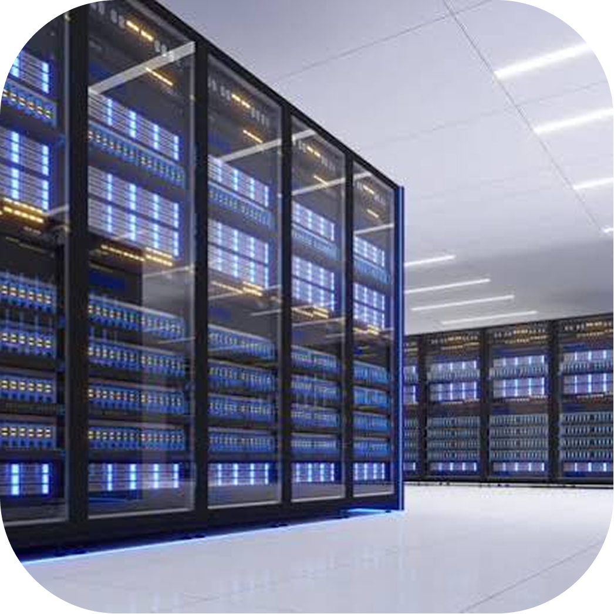
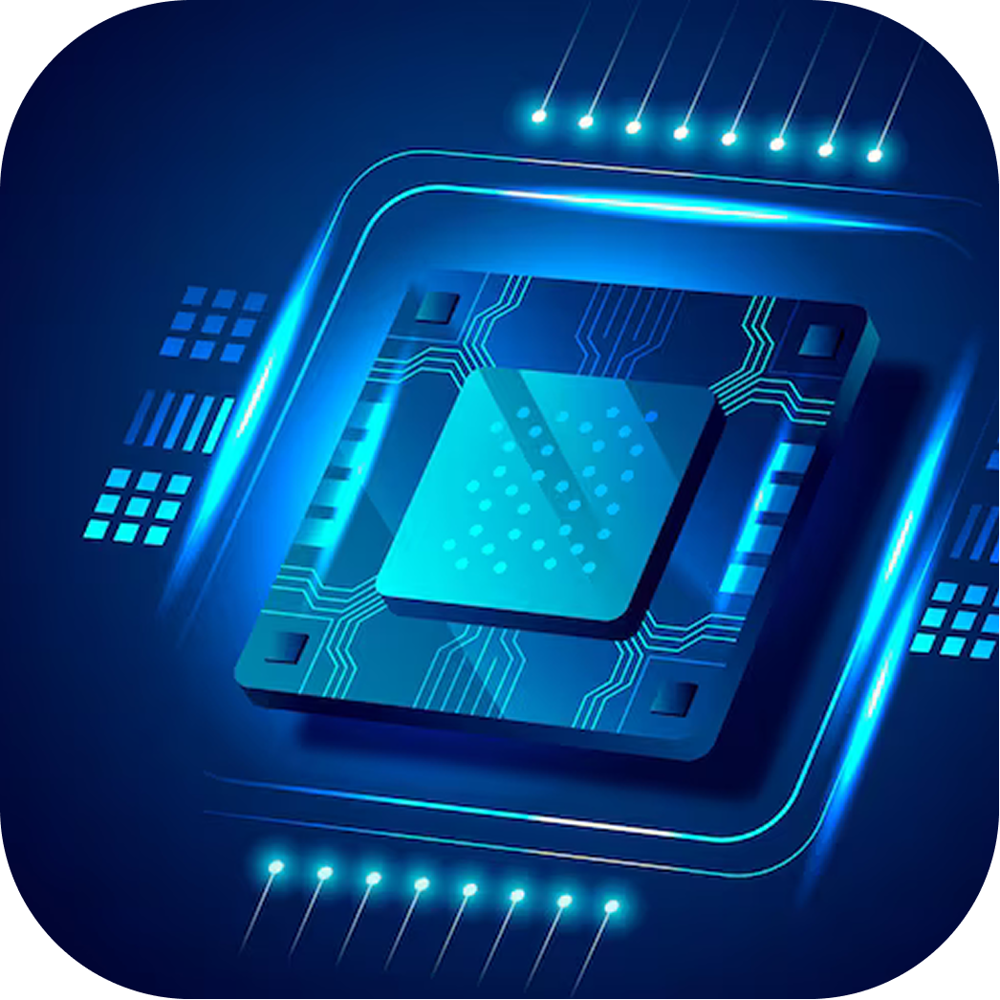
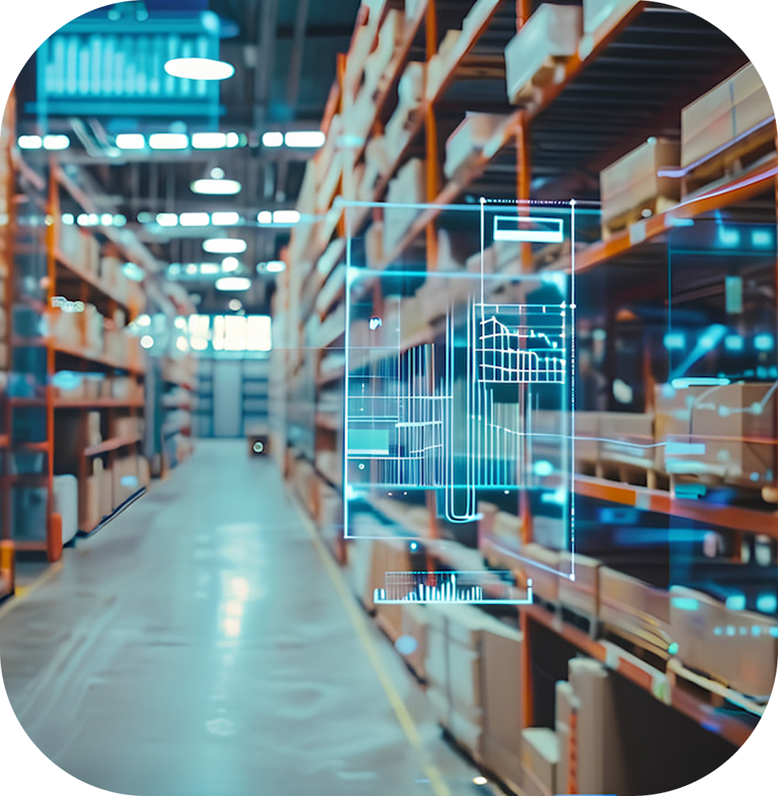
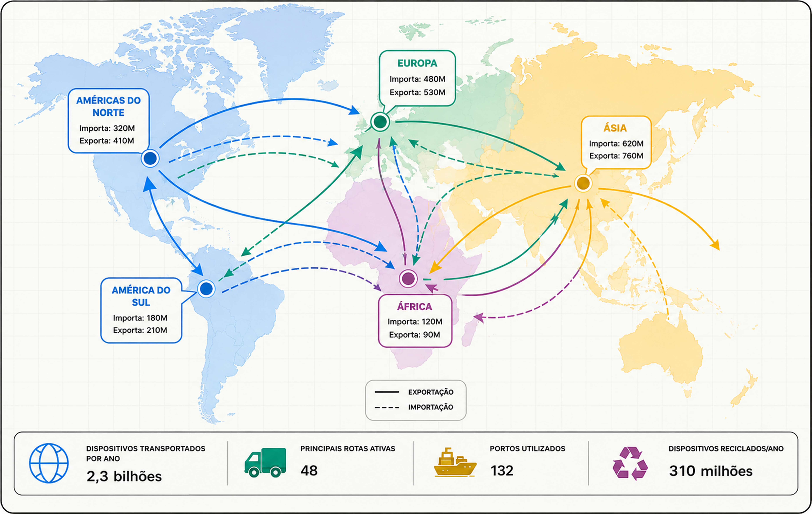
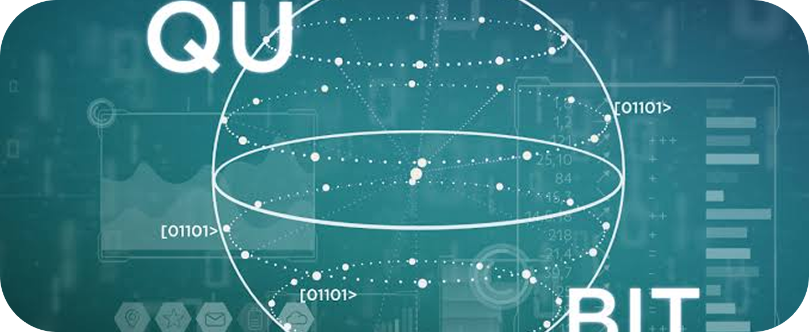
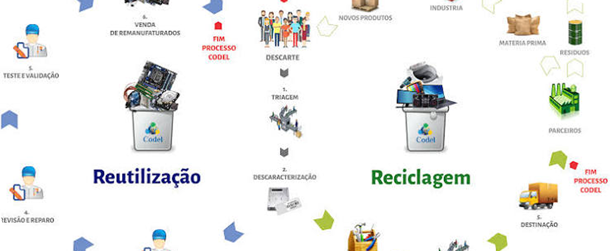

Linha do tempo
-
1950 - 1970
Mainframes & Comércio Local

-
1970 – 1990
Microchips e Exportação

-
1990 – 2005
Internet & E-commerce
-
2005 – 2015
Mobile e Marketplaces
-
2015 – Hoje
IA, Nuvem e Logística

Como a tecnologia virou mercadoria
Atualmente, a tecnologia deixou de ser um privilégio e se tornou comum para bilhões de pessoas, ou seja, basicamente ocorre quando inovações que antes eram exclusivas, complexas ou restritas a laboratórios passam a ser produzidas em massa, padronizadas e vendidas amplamente no mercado. os consumidores utilizam a internet para:
Pesquisar produtos
Ler avaliações
Realizar pagamentos
Acompanhar pedidos
 1.png)
Rotas globais de dispositivos

Ásia
Europa
América
Africa
O mapa acima apresenta as principais rotas globais de dispositivos eletrônicos, mostrando os fluxos de exportação e importação entre diferentes continentes. A Ásia e a Europa possuem grande participação nesse comércio, enquanto América do Norte, América do Sul e África também participam das rotas internacionais. Esses fluxos demonstram como a produção, distribuição e reciclagem de dispositivos eletrônicos estão conectadas mundialmente.
O próximo ciclo
IA generativa

Computação Quântica
Energia Limpa

Recurso & Reuso
O futuro da tecnologia aponta para soluções cada vez mais inteligentes, eficientes e sustentáveis. A IA generativa e a computação quântica podem transformar a forma como processamos informações, enquanto as energias limpas e a reutilização de recursos contribuem para reduzir os impactos ambientais e tornar a tecnologia mais sustentável.